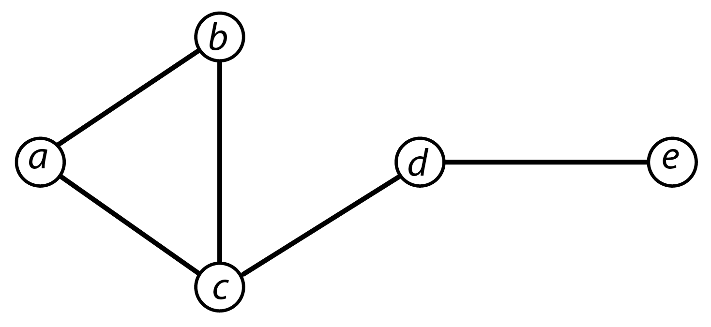

Annexe - Notations mathématiques et calcul matriciel
Les personnes qui savent lire une équation peuvent sauter la section suivante ; les personnes qui les survolent sans trop chercher à les comprendre 1 trouveront peut-être un petit intérêt aux lignes qui suivent.
Déchiffrer une équation
Il existe deux moyens principaux de décrire un indicateur : écrire ce qu’il permet de mesurer ; donner la formule permettant son calcul. Savoir lire une formule est utile pour plusieurs raisons. Certaines disciplines les utilisent couramment et il est difficile voire inutile d’essayer de lire un article de physique si on ne sait pas lire une équation. Lire les équations permet de démystifier certains travaux : un minimum d’habitude permet de réaliser que 90 % des “nouveaux” indicateurs proposés dans certaines communautés scientifiques sont des indicateurs classiques plus un paramètre donné et/ou une constante. Avec un peu de pratique, il est également plus facile de prévoir les variations d’un indicateur et ses limites en étudiant sa formule mathématique plutôt que sa description verbale.
Il existe une poignée de symboles utilisés de manière à peu près homogène quelle que soit la discipline. Je liste ici uniquement les plus fréquents :
- \(\subset\) : l’ensemble situé à gauche est inclus dans l’ensemble situé à droite. Soit un graphe \(G = \{V,E\}\) et un sous-graphe \(G' = \{V',E'\}\) de \(G\) alors \(V' \subset V\) et \(E' \subset E\) ;
- \(\in\) : l’élément à gauche est un élément de l’ensemble situé à droite. Par exemple, dans un graphe \(G = \{V,E\}\), tout sommet \(v \in V\) ;
- \(\cup\) : union des deux ensembles situés de part et d’autre ;
- \(\cap\) : intersection des deux ensembles situés de part et d’autre ;
- \(\bar{A}\) : moyenne de \(A\) ;
- \(|A|\) : valeur absolue de \(A\);
- \(\Sigma\) désigne la somme des éléments situés à droite ;
- \(\Pi\) désigne le produit des éléments situés à droite.
Les deux derniers symboles (sigma et pi) ont souvent une notation du type \(i = 1\) en bas et \(n\) en haut, comme ceci : \(\sum_{i=1}^n\). Les lettres utilisées importent peu : cela signifie que la somme concerne les \(n\) individus du premier (\(i = 1\)) au dernier (\(n\)) (voir les formules des indicateurs de Shimbel par exemple).
Classiquement, les formules en analyse de réseau sont des égalités où le terme de gauche est le nom de l’indicateur (parfois une lettre grecque, souvent une lettre en italique mais c’est une simple convention et il est rare que deux autrices adoptent les mêmes) et à droite la formule permettant le calcul de l’indicateur. La formule est précédée ou suivie d’une courte phrase définissant les termes employés dans l’équation.
Pour comprendre une formule un peu longue (modularité par exemple), il est conseillé de commencer par décomposer : comprendre ce qui est calculé dans les parenthèses, au numérateur puis au dénominateur.
Soit un des indicateurs les plus fréquemment calculés, la densité.
La densité \(\delta\) d’un graphe simple non orienté et non planaire d’ordre \(V\) (nombre de sommets) et de taille \(E\) (nombre de liens) est:
\[\delta = \frac{2E}{V(V - 1)}\]
Une même équation peut s’écrire de différentes façons. Les formules qui suivent sont totalement équivalentes:
\[ \delta = \frac{2E}{V(V - 1)} = 2\frac{E}{V(V - 1)}= \frac{E}{(V \times (V-1)) / 2} \]
Les notations \(V(V-1)\), \(V \times (V-1)\) et \(V \cdot (V-1)\) sont strictement équivalentes et désignent la multiplication du premier terme par le second.
Pour mémoire, la densité est le rapport entre le nombre de liens présents (noté ici \(E\)) et le nombre de liens possibles. Il s’agit d’un rapport donc la formule a la forme d’une fraction. Le graphe est simple, non planaire, il n’y a pas de boucle : chaque sommet peut être en relation avec tous les autres sommets. S’il y a \(V\) sommets, le nombre de liens possibles est donc \(V(V-1)\). Si les boucles étaient autorisées, on remplacerait le dénominateur par \(V^2\). Mais pourquoi multiplier le nombre de liens par 2 (ou diviser le nombre de liens possibles par 2) ? Le graphe est non orienté donc les liens entre les sommets \(v_i\) et \(v_j\) et \(v_j\) et \(v_i\) sont considérés comme un seul lien. Si le réseau était orienté, on supprimerait le terme 2 de l’équation.
Avec ces éléments à l’esprit, on peut déterminer les variations de l’indicateur. Si le graphe est vide (pas de lien), le numérateur (\(E\) ou \(2E\)) est égal à 0 et \(\delta\) est égal à 0. Si le graphe est complet, le nombre de liens présents est égal au nombre de liens possibles et \(\delta\) est égal à 1.
En résumé
L’objectif n’est pas de se transformer en mathématicienne mais il est utile de prendre le temps de réfléchir aux formules, aux indices, de se familiariser avec les notations les plus courantes. Ça vous permettra notamment de repérer quand un logiciel vous sort des résultats aberrants, ce qui arrive de temps à autre. Ça vous permettra aussi de repérer quand deux indicateurs sont tellement proches l’un de l’autre qu’en mesurer un seul suffit. Ça vous donnera accès à des disciplines habituées à ces formalisations et actives en analyse de réseau. Et, avec un peu d’habitude, ça vous permettra surtout de mettre aux points les indicateurs dont vous aurez besoin pour répondre à vos questions de recherche.
Attention, certaines autrices sont spécialisées dans l’équation inutilement compliquée allant souvent de pair avec une description incomplète des termes de la formule donc n’hésitez pas à croiser les sources, par exemple en contrôlant la formule indiquée le Wikipedia anglophone 2.
Dernier conseil quand vous explorez un indicateur : dessinez de minuscules réseaux (une poignée de sommets, une poignée de liens) avec des formes spécifiques (ligne, cercle, nœud papillon), réfléchissez aux résultats que vous devriez obtenir puis calculez manuellement l’indicateur en question. Vérifiez ce que donne le logiciel que vous utilisez et si le résultat est normalisé par défaut, prenez le temps de comprendre comment il est normalisé. Vous serez beaucoup plus à votre aise ensuite lorsque vous commenterez et interpréterez vos résultats.
Matrices et calcul matriciel
Un certain nombre d’indicateurs en analyse de réseau reposent sur du calcul matriciel, calcul très vite chronophage s’il est réalisé à la main. Si l’analyse de réseau se développe à partir des années 1950-1960 dans différentes disciplines (chapitre 2), c’est en partie grâce à l’arrivée des premiers ordinateurs dans les universités. Si les réseaux étudiés depuis une vingtaine d’années sont de plus en plus gros, c’est en grande partie lié à la puissance de calcul informatique disponible aujourd’hui.
Ce qu’est une matrice
Une matrice est un tableau rectangulaire de nombres composé de \(x\) lignes et \(y\) colonnes permettant de représenter les propriétés d’un objet. Les matrices d’adjacence d’un graphe simple d’ordre \(V\) sont des tableaux carrés, remplis de 1 (présence d’un lien de \(v_i\) vers \(v_j\)) et de 0 (diagonale, absence de lien entre \(v_i\) et \(v_k\)). Si le graphe est non orienté, tout lien de \(v_i\) vers \(v_j\) suppose un lien de \(v_j\) vers \(v_i\) et la matrice est dite symétrique : la disposition des 1 et des 0 est identique de chaque côté de la diagonale.
L’exemple ci-dessous montre un réseau simple, non orienté, et la matrice d’adjacence correspondante.

\(\begin{matrix} & a & b & c & d & e \\ a& 0 & 1 & 1 & 0 & 0 \\ b& 1 & 0 & 1 & 0 & 0\\ c& 1 & 1 & 0 & 1 & 0 \\ d& 0 & 0 & 1 & 0 & 1 \\ e& 0 & 0 & 0 & 1 & 0 \\ \end{matrix}\)
Par convention, la lecture se fait des lignes (origine) vers les colonnes (destination). Un calcul simple est la somme marginale (somme en ligne ou somme en colonne) permettant d’obtenir les degrés. Avec la matrice d’adjacence d’un graphe orienté, les sommes en ligne permettent d’obtenir le degré sortant, les sommes en colonne le degré entrant.
Plus courts chemins et diamètre d’un réseau
Le calcul des plus courts chemins dans un graphe repose sur du calcul matriciel. Lorsque la matrice d’adjacence est élevée au carré, les nombres dans les cases correspondent au nombre de chemins de longueur deux entre chaque paire de sommets. Lorsque la matrice est élevée au cube, les nombres correspondent au nombre de chemins de longueur trois, etc. etc.
Si on additionne la matrice de départ et la matrice élevée au carré, les cases avec un 0 correspondent aux paires de sommets entre lesquels n’existe pas de chemin de longueur 1 ou 2. Si on additionne la matrice de départ, la matrice élevée au carré et la matrice élevée au cube, les cases avec un 0 correspondent aux paires de sommets entre lesquels il n’existe pas de chemin de longueur 1, 2 ou 3. Tant qu’il reste des 0 dans cette somme, l’opération continue jusqu’à \(A^{V - 1}\) (le diamètre maximal d’un graphe de \(V\) sommets est \(V - 1\)).
Le tableau ci-dessous montre la matrice d’adjacence \(A\), la matrice au carré et la matrice au cube ainsi que la somme de ces trois matrices.
\(\begin{matrix} & a & b & c & d & e \\ a& 0 & 1 & 1 & 0 & 0 \\ b& 1 & 0 & 1 & 0 & 0 \\ c& 1 & 1 & 0 & 1 & 0 \\ d& 0 & 0 & 1 & 0 & 1 \\ e& 0 & 0 & 0 & 1 & 0 \end{matrix}\)
Matrice au carré
\(\begin{matrix} & a & b & c & d & e \\ a& 2 & 1 & 1 & 1 & 0 \\ b& 1 & 2 & 1 & 1 & 0 \\ c& 1 & 1 & 3 & 0 & 1 \\ d& 1 & 1 & 0 & 2 & 0 \\ e& 0 & 0 & 1 & 0 & 1 \end{matrix}\)
Matrice au cube
\(\begin{matrix} & a & b & c & d & e \\ a& 2 & 3 & 4 & 1 & 1 \\ b& 3 & 2 & 4 & 1 & 1 \\ c& 4 & 4 & 2 & 4 & 0 \\ d& 1 & 1 & 4 & 0 & 2 \\ e& 1 & 1 & 0 & 2 & 0 \end{matrix}\)
Somme des trois matrices précédentes
\(\begin{matrix} & a & b & c & d & e \\ a&4 &5 & 6 & 2 & 1 \\ b&5 &4 & 6 & 2 & 1 \\ c&6 &6 & 5 & 5 & 1 \\ d&2 &2 & 5 & 2 & 3 \\ e&1 &1 & 1 & 3 & 1 \end{matrix}\)
La présence de nombres dans la diagonale peut surprendre. Si on examine \(A^2\), la case (\(a,a\)) contient un 2 : il existe donc deux chemins de longueur 2 permettant d’aller de \(a\) à \(a\) ({\(ab\),\(ba\)} et {\(ac\),\(ca\)}). La lecture est la même pour \(A^3\) : il existe par exemple 3 chemins de longueur 3 entre \(a\) et \(b\) ({\(ac\),\(ca\),\(ab\)}, {\(ab\),\(ba\),\(ab\)}, {\(ab\),\(bc\),\(ca\)}).
Lorsqu’on additionne les différentes matrices (\(A\) + \(A^2\) + … + \(A^n\)), le diamètre est égal au plus petit exposant \(n\) pour lequel plus aucune case n’est égale à 0 (ici 3, ce qui se vérifie facilement sur le graphique). S’il reste des 0 pour \(n = V - 1\), cela indique un réseau non connexe.
Matrice et transposée
La transposée d’une matrice d’adjacence \(A\), souvent notée \(A'\) ou \(t(A)\), s’obtient en permutant lignes et colonnes. Si je pars d’une matrice actrices - événements de taille \(V_1 \times V_2\), la transposée sera de taille \(V_2 \times V_1\). Multiplier une matrice rectangulaire par sa transposée ou une transposée par la matrice d’origine permet de passer d’un réseau bimodal à deux réseaux unimodaux non orientés et valués.
Je reprends l’exemple utilisé dans le chapitre 7 concernant la participation de 4 chercheuses à 3 colloques. Soit la matrice d’adjacence du réseau de départ \(A\) où la case \(a_i,C_j\) vaut 1 si \(a_i\) a assisté à la conférence \(C_j\) et 0 dans le cas contraire. On obtient la matrice suivante :
\(\begin{matrix} & C_1 & C_2 & C_3 \\ a_1& 1 & 0 & 0 \\ a_2& 1 & 1 & 1 \\ a_3& 0 & 1 & 0 \\ a_4& 0 & 1 & 1 \end{matrix}\)
La somme en ligne permet de connaître le nombre de conférences auxquelles ont assisté les personnes ; la somme en colonnes le nombre de personnes présentes à chaque conférence. Pour obtenir les réseaux unimodaux dérivés, on multiplie la matrice \(A\) par sa transposée \(A'\) obtenue en inversant lignes et colonnes. La multiplication \(A \times A'\) permet d’obtenir une matrice individus - individus de co-présence aux évènements ; la multiplication \(A' \times A\) une matrice événements - événements partageant un nombre donné de participantes.
\(A\)
\(\begin{matrix} & C_1 & C_2 & C_3 \\ a_1& 1 & 0 & 0 \\ a_2& 1 & 1 & 1 \\ a_3& 0 & 1 & 0 \\ a_4& 0 & 1 & 1 \end{matrix}\)
\(A'\)
\(\begin{matrix} &a_1 & a_2& az_3 & a_4 \\ C_1& 1 & 1 & 0 & 0\\ C_2& 0 & 1 & 1 & 0\\ C_3& 0 & 1 & 0 & 1 \end{matrix}\)
\(A \times A'\)
\(\begin{matrix} & a_1 & a_2 & a_3 & a_4 \\ a_1 &1 & 1 & 0 & 0 \\ a_2 &1 & 3 & 1 & 2 \\ a_3 &0 & 1 & 1 & 0 \\ a_4 &0 & 1 & 1 & 2 \end{matrix}\)
\(A' \times A\)
\(\begin{matrix} &C_1 & C_2 & C_3 \\ C_1&2 & 1 & 1\\ C_2&1 & 3 & 2\\ C_3&1 & 2 & 2 \end{matrix}\)
Les matrices obtenues sont valuées, symétriques (i.e. réseau non orienté) et la diagonale permet de retrouver le degré présent dans le réseau bimodal de départ (ex. : la case \(C_2,C_2\) de la matrice \(A \times A'\) vaut 3 : 3 personnes ont assisté à cette conférence).
Vecteurs et valeurs propres d’une matrice
Dans la section consacrée aux degrés pondérés par le degré des voisins, différents indices ont été évoqués (Katz, Eigenvector, PageRank). Tous ces indices reposent en partie sur le calcul des vecteurs propres - d’où le nom d’eigenvector centrality souvent utilisé dans les logiciels pour calculer l’un de ces indices.
Un vecteur propre \(x\) d’une matrice carrée est un vecteur solution de l’équation \(Ax = \lambda x\) avec \(x \neq 0\). Une matrice a en général plusieurs valeurs propres, la plus élevée est utilisée pour calculer les centralités. \(\lambda\) est appelé valeur propre.
L’ensemble des valeurs propres de \(A\) est appelé le spectre de \(A\). Certaines méthodes d’analyse de réseau, non abordées dans ce guide, mobilisent ces valeurs propres (spectral analysis).
Quelques indicateurs fréquemment utilisés
Les formules sont classées par ordre alphabétique.% La notation utilisée dans ce guide est détaillée dans la section suivante.
Liste des symboles utilisés et définitions
Les termes de base sont listées au départ; les définitions et formules sont ensuite indiquées par ordre alphabétique.
\(G\) : graphe \(\{V,E\}\).
\(V\) : ensemble des sommets ou ordre du graphe, noté \(V_1\), \(V_2\) en cas de réseau bimodal. \(v_i\) désigne n’importe quel sommet, \(v_i,v_j\) n’importe quelle paire de sommets.
\(E\) : ensemble des liens et taille du graphe. Noté \(E_1\), \(E_2\), ,\(E_n\) en cas de réseau multiplexe. \(e_{ij}\) désigne tout lien entre les deux sommets \(v_i\) et \(v_j\).
\(I\) : ensemble des intensités des liens en cas de réseau valué.
\(G'\) : sous-graphe \(\{V',E'\}\) de \(G\) où \(V' \subset V\) et \(E' \subset E\) (\(\subset\) se lit est inclus dans ).
\(A\) : matrice d’adjacence du réseau étudié.
Afin d’alléger certaines notations, un sommet \(v_i\) est parfois noté \(i\).
Centralité d’intermédiarité (betweenness)
Indicateur très souvent utilisé, pouvant être calculé pour les sommets et pour les liens. La direction des liens n’est généralement pas prise en compte.
Soit \(g_{v_jv_k}\) l’ensemble des plus courts chemins entre les sommets \(v_j\) et \(v_k\) et \(g_{v_j v_k}(v_i)\) l’ensemble des plus courts chemins entre les sommets \(v_j\) et \(v_k\) passant par le sommet \(v_i\) avec $ v_i v_j v_k$.
L’intermédiarité du sommet \(v_i\) est égale à :
\[ B(v_i) = \sum_{v_j \neq v_i \neq v_k} \frac{g_{v_j v_k}(v_i)}{g_{v_j v_k}} \]
Il est possible de normaliser cette mesure par le nombre total de plus courts chemins n’incluant pas le sommet \(v_i\) :
\[ B(v_i)' = \frac{2 B(v_i)}{(V - 1)(V - 2)} \]
La formule est équivalente pour l’intermédiarité des liens.
Si le réseau étudié n’est pas connexe, les intermédiarités ne peuvent être calculées qu’au sein des mêmes composantes.
Si le réseau est valué, l’intensité des liens est considérée comme une distance entre deux sommets et le calcul peut se faire en prenant en compte les plus courtes distances et non les plus courts chemins.
L’intermédiarité peut être calculée sur un réseau bimodal : la formule est la même, le dénominateur devient \((V_1 - 1)(V_2 - 2)\) pour la forme standardisée mais il n’est pas totalement certain qu’elle puisse être interprétée aisément d’un point de vue thématique.
Centralité de proximité (closeness centrality)
Indicateur mesurant l’éloignement moyen d’un sommet par rapport à l’ensemble des autres sommets du réseau (voir également Shimbel (indices de)).
La centralité de proximité \(C\) d’un sommet \(v_i\) est égale à :
\[ C(v_i) = \frac{V - 1}{\sum_{v_j} d(v_i, v_j)} \]
où \(d(v_i, v_j)\) désigne la longueur du plus court chemin entre deux sommets \(v_i\) et \(v_j\).
Dans le cas d’un réseau valué, si l’intensité est interprétée comme une distance, il est possible de calculer l’inverse de la distance moyenne entre un sommet et tous les autres sommets. Si l’intensité traduit la force de la relation (i.e. échanges commerciaux par exemple), il apparaît plus logique de considérer l’intensité moyenne de la relation.
La centralité de proximité peut être calculée pour un réseau bimodal.
Centralité de vecteur propre (eigenvector centrality)
Je regroupe dans cette entrée les indicateurs proposés par Katz (1953), Bonacich (1987) et une déclinaison plus récente (PageRank). Cette courte liste n’est pas exhaustive. Dans les trois cas, le principe consiste à pondérer le degré d’un sommet par le degré de ses voisins.
Bonacich propose une mesure de centralité \(c_i\) basée sur deux paramètres, \(\alpha\) et \(\beta\). \(\beta\) permet de moduler l’importance du degré des voisins sur la centralité d’un sommet : si la centralité de degré de mes voisins n’a aucune importance pour un type donné de relations, \(\beta = 0\) et le calcul est celui du degré ; si au contraire, cela compte beaucoup, \(\beta = 1\). S’il est avantageux pour moi d’avoir des voisins avec un degré faible, alors \(\beta < 0\). Le paramètre \(\alpha\) sert uniquement à contrôler la longueur du vecteur propre obtenu.
\[ c_i(\alpha,\beta) = \sum_j (\alpha + \beta c_j) A_{ij} \]
où \(A_{ij}\) sont les lignes et colonnes de la matrice d’adjacence correspondant aux voisins du sommet \(v_i\). L’indicateur peut être calculé pour les réseaux orientés et non orientés mais est plus pertinent pour ces derniers 3.
En cas de réseau orienté, l’indice de centralité de Katzsemble plus performant :
\[ k_i(\alpha \beta) = \alpha \sum_{j} A_{ij}d_j + \beta \]
où \(A_{ij}\) sont les lignes et colonnes de la matrice d’adjacence correspondant aux voisins du sommet \(v_i\), \(d_j\) le degré des voisins \(j\), \(\alpha\) et \(\beta\) des constantes positives.
L’indice PageRank a été développé par Google pour classer les sites web et est adapté pour les réseaux orientés. Il consiste à pondérer la centralité de degré d’un sommet par la centralité de degré des sommets voisins divisée par le degré sortant. Ceci est pertinent pour les liens entre sites web : le fait que le blog du groupe fmr reçoive un lien depuis google.fr ne suffit pas à en faire un blog central car google.fr envoie \(x\) millions de liens vers des sites souvent obscurs.
\[ p_i(\alpha \beta) = \alpha \sum_j A_{ij} \frac{d_j}{d_j^{out}} + \beta \]
où \(d_j\) est le degré total des voisins \(j\) et \(d_j^{out}\) le degré sortant de ces mêmes voisins.
Degré (degree)
Mesure de centralité d’un sommet (\(d\)). Très utilisée, elle correspond au nombre de liens adjacents à un sommet. Soit la matrice d’adjacence \(A\) d’un réseau, alors :
\[ d_i = \sum_{j=1}^V A_{ij} \]
En cas de réseau orienté, on distingue degré entrant (ensemble des liens reçus - in-degree) et degré sortant (ensemble des liens émis - out-degree) 4.
Le degré moyen dans un réseau non orienté est égal à \(\frac{2E}{V}\) (chaque lien a deux extrémités, le nombre total d’extrémités est égal à la somme des degrés).
Dans un réseau orienté, le degré sortant moyen est égal au degré entrant moyen ainsi qu’à \(E/V\).
Dans un réseau valué, il est possible de sommer les intensités des liens adjacents afin d’obtenir un degré pondéré (weighted degree ou strength). Si ce réseau est par ailleurs orienté, on peut distinguer degré pondéré entrant et sortant.
La normalisation du degré est le plus souvent faite par le degré maximal possible (\(V - 1\) dans un réseau unimodal simple). Si le réseau est bimodal, la normalisation est faite en fonction de l’ordre de l’autre ensemble de sommets. Si une contrainte est donnée au nombre de liens (questionnaire sociométrique par exemple), il est nécessaire d’adapter le dénominateur pour normaliser le degré.
Densité (density)
Mesure portant sur le réseau dans son ensemble. Elle varie entre 0 (réseau vide) et 1 (réseau complet).
Soit \(G\) un réseau simple non orienté d’ordre \(V\) et de taille \(E\) :
\[ \delta = \frac{2E}{V(V - 1)} \]
Soit \(G\) est un réseau simple orienté :
\[ \delta = \frac{E}{V(V - 1)} \]
Soit \(G\) un réseau bimodal, \(G = \{V_1, V_2, E\}\) :
\[ \delta = \frac{E}{V_1 \times V_2} \]
Soit \(G\) un réseau planaire :
\[ \delta = \frac{E}{3(V - 2)} \]
La densité est sensible à l’ordre du réseau : plus ce dernier augmente, plus la densité baisse.
Diversité d’Agresti (Agresti diversity)
Indice utilisé pour mesurer l’homogénéité d’un réseau personnel. Soit \(p_i\) la proportion d’alters de la catégorie \(i\) et \(k\) le nombre total de catégories, l’indice est égal à
\[ \frac{1 - \sum\limits_{i = 1}^k p_i^2}{1 - 1/k} \]
Le numérateur peut être interprété comme la probabilité que deux alters pris au hasard appartiennent à deux catégories différentes. Le dénominateur est la valeur maximale que peut prendre cette mesure étant donné le nombre de catégories. L’indice varie entre 0 (homogénéité maximale) et 1 (hétérogénéité maximale).
Modularité (modularity)
Indicateur souvent utilisé 5 pour évaluer la qualité d’une partition \(P\) en \(C\) communautés. Elle peut donc être utilisée pour mesurer l’homophilie relative à un critère catégoriel. En effet, vérifier si beaucoup de liens ont pour extrémités des sommets appartenant à la même partition \(P\) est un cas particulier de l’appartenance des deux sommets à une même catégorie.
La direction des liens n’est généralement pas prise en compte. La formule donnée ici est celle proposée par Clauset et al. (2004) et implémentée dans le logiciel igraph ; des variantes existent.
\[ Q = \frac{1}{2E} \sum_{ij} \left( A_{ij} - \frac{d_i d_j}{2E} \right) \delta (c_i, c_j) \]
où \(E\) est le nombre de liens, \(A_{ij}\) la valeur présente dans la matrice d’adjacence \(A\) pour la ligne \(i\) et la colonne \(j\), \(d\) le degré et \(\delta\) une fonction booléenne valant 1 si \(i\) et \(j\) appartiennent à la même communauté \(c\) et 0 dans le cas contraire.
Cette formule fonctionne pour les réseaux valués : l’intensité de la relation remplace 0 ou 1 (\(A_{ij}\)) et le degré pondéré est utilisé (\(d_i, d_j\)). Le point de comparaison pour mesurer la modularité est un graphe aléatoire (terme \(\frac{d_i d_j}{2E}\)). Une valeur supérieure à 0.3 indique une bonne modularité, une valeur inférieure à 0 signale un réseau disassortatif.
Cette mesure peut être normalisée par la modularité maximale possible dans un réseau présentant la même distribution de degrés. Si le logiciel que vous utilisez propose plusieurs algorithmes de détection de communautés, comparer la modularité obtenue avec les différents algorithmes peut être utile.
Diverses propositions ont été faites pour adapter cette mesure aux réseaux bimodaux (voir l’article de Barber (2007) et les travaux qui le citent et amendent sa proposition). Aucune à ma connaissance ne s’est imposée.
Shimbel (indices de)
Shimbel dans un article de 1953 propose deux indicateurs (accessibilité et dispersion) permettant de décrire des réseaux de communication, indicateurs utilisés depuis notamment en géographie des transports.
La dispersion \(D\) d’un réseau correspond à la somme de tous les plus courts chemins \(L\) entre sommets au sein d’un réseau :
\[ D = \sum_{i=1}^V \sum_{j=1}^V L(i,j) \]
Plus la valeur est basse, plus le réseau est considéré comme compact.
L’accessibilité d’un sommet \(i\) depuis l’ensemble des autres sommets \(S\) 6 est égale à :
\[ A(i,S) = \sum_{j=1}^V L (i,j) \]
L’inverse de l’accessibilité de Shimbel est égale à la centralité de proximité 7.
Transivité (transitivity)
Indicateur pouvant être calculé sur le réseau dans son ensemble (\(T\)) et pour chaque sommet (\(t\)). Parfois appelé coefficient de clustering (clustering coefficient).
La mesure au niveau du réseau se calcule ainsi :
\[ T = \frac{\textrm{nombre de triades fermées} \times 3}{\textrm{nombre de triades connexes}} \]
Une triade fermée est un ensemble de 3 sommets \(ijk\) où chaque sommet est lié aux deux autres. Une triade connexe désigne 3 sommets \(ijk\) où les liens \(ij\) et \(jk\) sont présents, le lien \(ik\) pouvant être présent (triade fermée) ou absent (triade ouverte).
L’indicateur varie entre 0 (arbre, grille rectangulaire, réseau en étoile) et 1 (réseau complet ou réseau où chaque composante est une clique).
Dans leur article, Watts and Strogatz (1998) nomment global clustering coefficient la valeur moyenne des transitivités mesurées pour chaque sommet ; les résultats obtenus seront différents si leur formule est utilisée.
Au niveau d’un sommet, l’indicateur est :
\[ t_i = \frac{\textrm{nombre de triades fermées contenant \emph{i}} \times 3}{\textrm{nombre de triades connexes contenant \emph{i}}} \]
Il varie entre 0 (nombre de voisins < 2 ou étoile) et 1.
Différentes propositions existent pour les réseaux valués. Opsahl and Panzarasa (2009) proposent ainsi de calculer une transivité globale \(T_w\) où
\[ T_w = \frac{\textrm{Somme des intensités des triades fermées}}{\textrm{Somme des intensités des triades connexes}} \]
Il est possible d’adapter cet indicateur pour chaque sommet (les auteurs n’évoquent pas cette possibilité dans leur article).
Plus surprenant, l’indicateur a été adapté pour les réseaux bimodaux où, par définition, il ne peut exister de cycle et donc pas de triades fermées. L’intérêt dans ce cas se porte sur les cycles de longueur 4 fermés rapportés aux cycles de longueur 4 ouverts (voir le site de Tore Opsahl pour plus de détails).
Il n’y a pas de honte à avoir : j’ai commencé à traduire certains articles, d’optimisation linéaire notamment, quand j’ai réalisé que je ne les comprenais pas parce que je ne prenais pas le temps de lire les équations.↩︎
Ce que j’ai fait pour les formules indiquées infra.↩︎
Je renvoie aux pages très claires du manuel de Newman sur ces indicateurs.↩︎
On trouve dans certains textes les expressions “demi-degré intérieur” et “demi-degré extérieur”.↩︎
Qu’il soit souvent utilisé ne signifie pas qu’il est le plus pertinent et/ou le plus efficace. Cette remarque est généralisable à tous les indicateurs évoqués dans ce guide.↩︎
Je reprends ici la notation utilisée par l’auteur dans son article.↩︎
J’ai repris ici les formules données par Shimbel dans son article de 1953 ; il serait plus logique que l’accessibilité soit mesurée pour \(j\) variant de 1 à \(S\) ; la distance d’un sommet à lui-même étant nulle, faire varier \(j\) et 1 à \(V\) donne le même résultat.↩︎